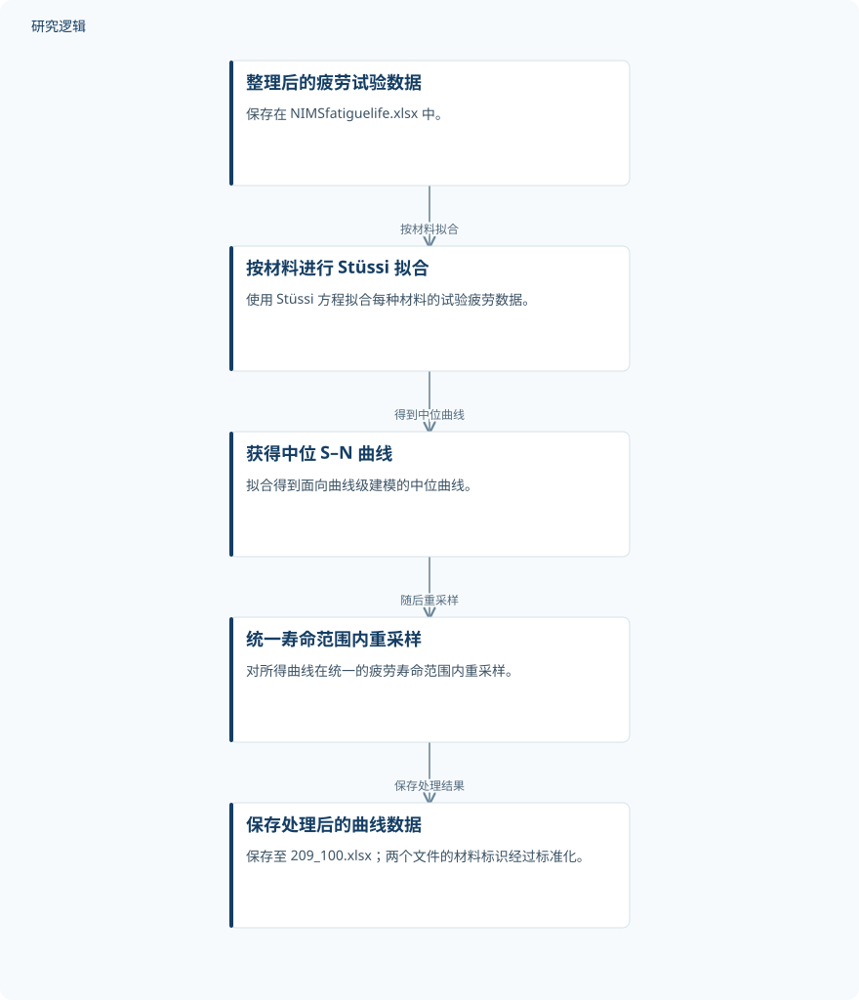

摘要解读
碳钢与低合金钢疲劳S–N曲线数据集
Fatigue S–N Curve Dataset for Carbon and Low-Alloy Steels
解读更新 2026-11-10 13:15 · 依据公开摘要整理，未核验全文细节
如何把整理后的疲劳试验数据转化为可供机器学习使用的曲线数据？这份数据集摘要提供了一条清晰的处理链：按材料拟合中位 S–N 曲线，再在统一疲劳寿命范围内重采样。阅读价值在于理解试验数据与曲线建模数据的区别，而非寻找已经验证的预测性能。
文章目录
从疲劳试验数据走向曲线级建模
这份摘要介绍的是数据集及其处理方式，核心对象是疲劳试验数据与由其生成的 S–N 曲线数据。摘要列出的用途包括疲劳数据分析、S–N 曲线建模，以及基于机器学习的曲线预测模型开发与评估。因此，理解数据如何从试验记录转为曲线表达，是判断其适用性的起点。
Stüssi 拟合之后，在统一寿命范围重采样
NIMSfatiguelife.xlsx 保存本研究使用的、经过整理的疲劳试验数据。面向曲线级建模，作者对每种材料的试验疲劳数据使用 Stüssi 方程进行拟合，得到中位 S–N 曲线，随后在统一的疲劳寿命范围内重采样。
处理后的数据保存在 209_100.xlsx 中。摘要还说明，材料标识经过标准化，以保持两个文件之间的一致性。由此可以区分两个文件的角色：前者承载整理后的试验数据，后者承载经拟合与重采样得到的建模数据。
依据摘要整理的疲劳曲线数据处理示意


仅概括摘要明确给出的处理关系，不是论文原图，不表示未报告的试验配置或预测效果。
下载 SVG图示关系说明
实线表示相邻阶段的信息流，虚线表示跨阶段联系或反馈。
整理后的疲劳试验数据 → 按材料进行 Stüssi 拟合：按材料拟合；按材料进行 Stüssi 拟合 → 获得中位 S–N 曲线：得到中位曲线；获得中位 S–N 曲线 → 统一寿命范围内重采样：随后重采样；统一寿命范围内重采样 → 保存处理后的曲线数据：保存处理结果
交付的是数据与处理结果，而非预测性能结论
摘要实际报告的成果，是提供相互对应的数据文件，并明确从试验数据到中位曲线、再到重采样数据的处理关系。机器学习预测属于数据集支持的用途；摘要没有给出模型精度、算法排名或性能提升结果，不能把这一用途表述为已经取得的预测效果。
样本规模、拟合质量与验证范围仍待核对
仅凭摘要，无法判断材料及试验样本规模、试验条件、统一寿命范围的具体边界、重采样规则和拟合误差，也无法判断模型比较、数据划分或外部验证的范围。这些信息是摘要未报告，而不等于研究没有开展。尤其不能根据文件名推断材料数量或采样点数，也不能把重采样点当作新增的独立试验样本。
阅读启发：先核对数据来源，再理解预测用途
阅读启发：对关注疲劳预测与可靠性的读者，值得进一步查阅数据说明，确认试验记录、材料标识与处理后曲线如何对应，以及模型开发和评估如何使用这些数据。还需留意，中位曲线之外的疲劳散布与不确定性如何表达，当前摘要并未说明，不能据此推导可靠性评估能力。
以上为本站阅读启发与建议，不是论文已验证的结论。